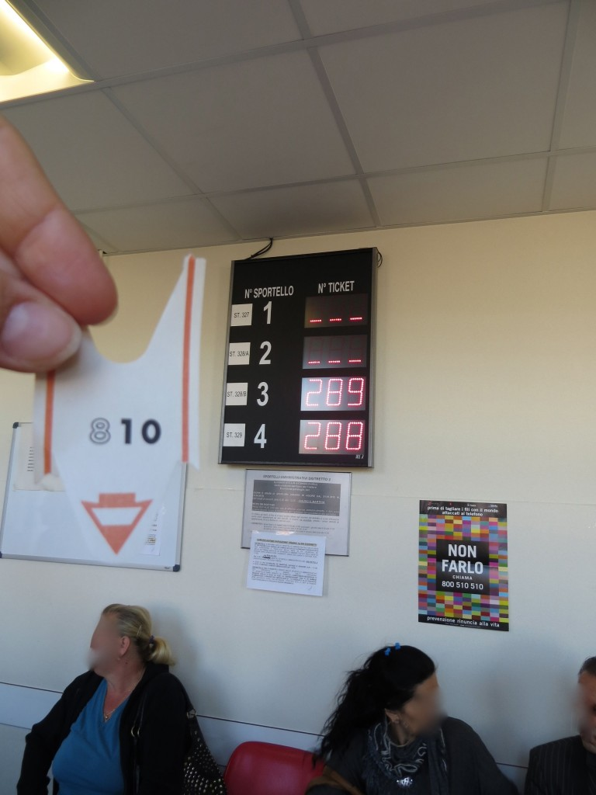
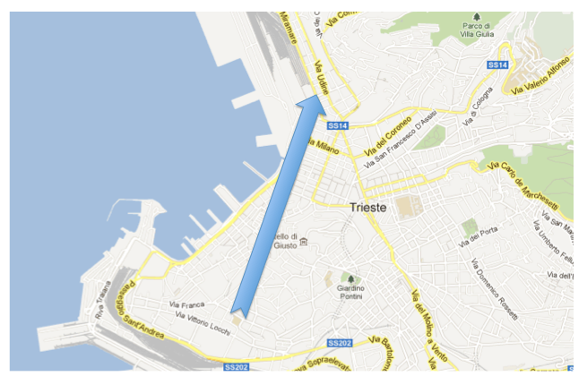

A few days after obtaining
documents A and
B, I'm back to my usual "Yes I can!" attitude, ready to defy any obstacle (or probably it is only the energy I'm getting from the spectacular amount of sugar I'm absorbing every day, thanks to my frequent stops to the bakery around the corner...). This time I need
document C, so I head to
office C. I get there, grab a number, sit, wait (not too long fortunately) and my number is called. I meet the same I-am-so-bored-I-want-to-die guy who checks the forms I filled out, then checks the computer and says:
"This is not the right place, since this is the first time you apply for this document you need to go to another office". These few words are enough to erase any trace of smile from my face, and my mind is already screaming
Noooo! when he says:
"It's the building next to this one". Quite relieved and full of hope I ask:
"But, is it open today?".
"Yes, yes". Pause.
"I think." I think? Oh boy... Things are getting bad...
But I do as he says and I walk those few meters to the building nearby. At the counter I meet an I-am-so-bored-I-want-to-die lady, who says: "
Today that office is closed.
But here's a list of other offices you can go to." After trying to silence my mind which, while yelling another
Noooo!, I could picture transforming into the
Scream by Munch, I ask:
"Without reading this entire list, would you be so nice to just tell me where's the closest open office?". Not so nicely she indicates it to me, and I leave.
I take the bus, locate the building, locate the floor, locate the ticket machine and take a number for the office #3. And again:
Nooooo!

Number 810 out of 289? What? Someone probably sees my consternation and promptly says:
"Don't panic, just look at the last two digits" . Ah, ok, so I'm number 10, which means that I have
only 21 people in front of me. Should I be brave and stay, or should I be smart and leave? As I hear someone saying that it takes about 10 minutes for each person to complete their paperwork once they are called, I run some numbers and absolutely have no doubts: I'm out of here!
And for the second time, I decide that I need something to lift my spirit. So I enter into a
salumeria and get a
burrata pugliese (a creamier version of the mozzarella, more info in one of my next posts...). No sugar this time, but lots of calories nevertheless. Good.

A few days later I wake up feeling like Superwoman: I know what to do, where to go, and what time to be there. I dash straight to the designated office early in the morning (the arrow above should give you an idea of my state of mind), get my number, have the time to read only a few pages of
50 Shades of Grey on my Kindle and for the first time I'm bothered that my number is called (yes, this is what a good reading can do: the impossible). I get in, present my documentation, and 15 minutes later I'm out. Yes! I can!